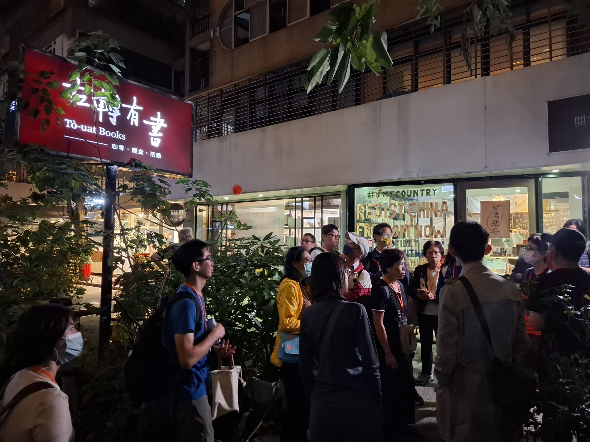

從一間書店，走進城中的資產地圖
這晚從左轉有書出發，沿鎮江街、北平東西路與青島東路一帶行走。街名、飯店、行政機關和一間間看似平常的建築，在導覽裡被重新接成一張地圖：國民黨的黨產如何形成，又如何在民主化之後被追問。
路線不只談一筆土地的去向，也把戒嚴時期的城市治理、反對運動、財團與政黨的關係放回原地。夜色裡，眼前的行政院、監察院與立法院不再只是辦公大樓，而是仍在運作的制度現場。
這一晚才會遇到的三個畫面
有些細節得站在現場，才會和地圖上的文字重疊。

台北城中區的黨產謎團
這晚從左轉有書出發，沿鎮江街、北平東西路與青島東路一帶行走。街名、飯店、行政機關和一間間看似平常的建築，在導覽裡被重新接成一張地圖：國民黨的黨產如何形成，又如何在民主化之後被追問。
路線不只談一筆土地的去向，也把戒嚴時期的城市治理、反對運動、財團與政黨的關係放回原地。夜色裡，眼前的行政院、監察院與立法院不再只是辦公大樓，而是仍在運作的制度現場。
有些細節得站在現場，才會和地圖上的文字重疊。